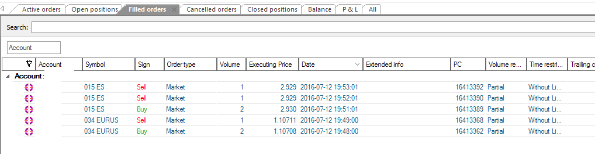

Visual Chart Live Data/Trading¶
Starting with release 1.5.1.93, backtrader supports Visual Chart Live
Feeds and Live Trading.
Needed things:
Visual Chart 6 (this one runs on Windows)
comtypes, specifically this fork: https://github.com/mementum/comtypesInstall it with:
pip install https://github.com/mementum/comtypes/archive/master.zipThe Visual Chart API is based on COM and the current
comtypesmain branch doesn’t support unpacking ofVT_ARRAYSofVT_RECORD. And this is used by Visual ChartPull Request #104 has been submitted but not yet integrated. As soon as it is integrated, the main branch can be used.
pytz(optional but strongly recommended)In many cases the internal
SymbolInfo.TimeOffsetprovided by the data feeds suffices to return data feeds in market time (even if the default configuration isLocalTimein Visual Chart)
If you don’t know what’s Visual Chart and/or its currently associated broker Esfera Capital, then visit the following sites:
Initial statement:
As always and before risking your money, TEST, TEST, TEST and RE-TEST a thousand times.
From bugs in this software, to bugs in your own software and the management of unexpected situations: Anything can go wrong
Some notes about this:
The data feed is rather good and supports built-in resampling. Good, because there is no need to do resampling.
The data feed doesn’t support Seconds resolution. Not good but solvable by the built-in resampling of backtrader
Backfilling is built-in
Some on the markets in
International Indices(in exchange096) have odd timezones and market offsets.Some work has gone into this to for example deliver
096.DJIin the expectedUS/EasterntimezoneThe data feed offers continuous futures which is very handy to have a large history.
As such a second parameter can be passed to a data to indicate which is the actual trading asset.
DateTime for a Good Til Date order can only be specified as a date. The time component is ignored.
There is no direct way to find the offset from the local equipment to the data server and a heuristic is needed to find this out from RealTime Ticks at the start of a session.
Passing a datetime with a time component (rather than the default 00:00:00) seems to create a time filter in the COM API. For example if you say you want the Minute data, starting 3 days ago at 14:30, you could do:
dt = datetime.now() - timedelta(days=3) dt.replace(hour=14, minute=30) vcstore.getdata(dataname='001ES', fromdate=dt)Data is then skipped until 14:30 not only 3 days ago, BUT EVERY OF THE DAYS AFTERWARDS
As such, please pass only full dates in the sense that the default time component is untouched.
The broker supports the notion of Positions but only when they are open. The last event with regards to a Position (which is size is 0) is not sent.
As such, Position accounting is done entirely by backtrader
The broker doesn’t report commissions.
The workaround is to supply your own
CommissionInfoderived class when instantiating the broker. See the backtader docs for creating your own class. It is rather easy.
CancelledvsExpiredorders. This distinction doesn’t exist and an heuristic would be needed to try to clear the distinction out.As such only
Cancelledwill be reported
Some additional notes:
RealTime ticks are mostly not used. They produce large amounts of unneeded information for backtrader purposes. They have 2 main purposes before being completely disconnected by backtrader
- Finding out if a Symbol exists.
- Calculating the offset to the data server
Of course the information is gathered in realtime for prices but from DataSource objects, which provide the historical data at the same time.
As much as possible has been documented and is available at the usual documentation link:
A couple of runs from the sample vctest.pye against the Visual Chart and
the Demo Broker
First: 015ES (EuroStoxx50 continuous) with resampling to 1 minute and
featuring a disconnection and reconnection:
$ ./vctest.py --data0 015ES --timeframe Minutes --compression 1 --fromdate 2016-07-12
Output:
--------------------------------------------------
Strategy Created
--------------------------------------------------
Datetime, Open, High, Low, Close, Volume, OpenInterest, SMA
***** DATA NOTIF: CONNECTED
***** DATA NOTIF: DELAYED
0001, 2016-07-12T08:01:00.000000, 2871.0, 2872.0, 2869.0, 2872.0, 1915.0, 0.0, nan
0002, 2016-07-12T08:02:00.000000, 2872.0, 2872.0, 2870.0, 2871.0, 479.0, 0.0, nan
0003, 2016-07-12T08:03:00.000000, 2871.0, 2871.0, 2869.0, 2870.0, 518.0, 0.0, nan
0004, 2016-07-12T08:04:00.000000, 2870.0, 2871.0, 2870.0, 2871.0, 248.0, 0.0, nan
0005, 2016-07-12T08:05:00.000000, 2870.0, 2871.0, 2870.0, 2871.0, 234.0, 0.0, 2871.0
...
...
0639, 2016-07-12T18:39:00.000000, 2932.0, 2933.0, 2932.0, 2932.0, 1108.0, 0.0, 2932.8
0640, 2016-07-12T18:40:00.000000, 2931.0, 2932.0, 2931.0, 2931.0, 65.0, 0.0, 2932.6
***** DATA NOTIF: LIVE
0641, 2016-07-12T18:41:00.000000, 2932.0, 2932.0, 2930.0, 2930.0, 2093.0, 0.0, 2931.8
***** STORE NOTIF: (u'VisualChart is Disconnected', -65520)
***** DATA NOTIF: CONNBROKEN
***** STORE NOTIF: (u'VisualChart is Connected', -65521)
***** DATA NOTIF: CONNECTED
***** DATA NOTIF: DELAYED
0642, 2016-07-12T18:42:00.000000, 2931.0, 2931.0, 2931.0, 2931.0, 137.0, 0.0, 2931.2
0643, 2016-07-12T18:43:00.000000, 2931.0, 2931.0, 2931.0, 2931.0, 432.0, 0.0, 2931.0
...
0658, 2016-07-12T18:58:00.000000, 2929.0, 2929.0, 2929.0, 2929.0, 4.0, 0.0, 2930.0
0659, 2016-07-12T18:59:00.000000, 2929.0, 2930.0, 2929.0, 2930.0, 353.0, 0.0, 2930.0
***** DATA NOTIF: LIVE
0660, 2016-07-12T19:00:00.000000, 2930.0, 2930.0, 2930.0, 2930.0, 376.0, 0.0, 2930.0
0661, 2016-07-12T19:01:00.000000, 2929.0, 2930.0, 2929.0, 2930.0, 35.0, 0.0, 2929.8
Note
The execution environment has pytz installed
Note
Notice the absence of --resample: for Minutes the resampling
is built-in Visual Chart
And finally some trading, buying 2 contract of 015ES with a single
Market order and selling them in 2 orders of 1 contract each.
Execution:
$ ./vctest.py --data0 015ES --timeframe Minutes --compression 1 --fromdate 2016-07-12 2>&1 --broker --account accname --trade --stake 2
The output is rather verbose, showing all parts of the order exeuction. Summarising a bit:
--------------------------------------------------
Strategy Created
--------------------------------------------------
Datetime, Open, High, Low, Close, Volume, OpenInterest, SMA
***** DATA NOTIF: CONNECTED
***** DATA NOTIF: DELAYED
0001, 2016-07-12T08:01:00.000000, 2871.0, 2872.0, 2869.0, 2872.0, 1915.0, 0.0, nan
...
0709, 2016-07-12T19:50:00.000000, 2929.0, 2930.0, 2929.0, 2930.0, 11.0, 0.0, 2930.4
***** DATA NOTIF: LIVE
0710, 2016-07-12T19:51:00.000000, 2930.0, 2930.0, 2929.0, 2929.0, 134.0, 0.0, 2930.0
-------------------------------------------------- ORDER BEGIN 2016-07-12 19:52:01.629000
Ref: 1
OrdType: 0
OrdType: Buy
Status: 1
Status: Submitted
Size: 2
Price: None
Price Limit: None
ExecType: 0
ExecType: Market
CommInfo: <backtrader.brokers.vcbroker.VCCommInfo object at 0x000000001100CE10>
End of Session: 736157.916655
Info: AutoOrderedDict()
Broker: <backtrader.brokers.vcbroker.VCBroker object at 0x000000000475D400>
Alive: True
-------------------------------------------------- ORDER END
-------------------------------------------------- ORDER BEGIN 2016-07-12 19:52:01.629000
Ref: 1
OrdType: 0
OrdType: Buy
Status: 2
Status: Accepted
Size: 2
Price: None
Price Limit: None
ExecType: 0
ExecType: Market
CommInfo: <backtrader.brokers.vcbroker.VCCommInfo object at 0x000000001100CE10>
End of Session: 736157.916655
Info: AutoOrderedDict()
Broker: None
Alive: True
-------------------------------------------------- ORDER END
-------------------------------------------------- ORDER BEGIN 2016-07-12 19:52:01.629000
Ref: 1
OrdType: 0
OrdType: Buy
Status: 4
Status: Completed
Size: 2
Price: None
Price Limit: None
ExecType: 0
ExecType: Market
CommInfo: <backtrader.brokers.vcbroker.VCCommInfo object at 0x000000001100CE10>
End of Session: 736157.916655
Info: AutoOrderedDict()
Broker: None
Alive: False
-------------------------------------------------- ORDER END
-------------------------------------------------- TRADE BEGIN 2016-07-12 19:52:01.629000
ref:1
data:<backtrader.feeds.vcdata.VCData object at 0x000000000475D9E8>
tradeid:0
size:2.0
price:2930.0
value:5860.0
commission:0.0
pnl:0.0
pnlcomm:0.0
justopened:True
isopen:True
isclosed:0
baropen:710
dtopen:736157.74375
barclose:0
dtclose:0.0
barlen:0
historyon:False
history:[]
status:1
-------------------------------------------------- TRADE END
...
The following happens:

Data is received as normal
A
BUYfor2with execution typeMarketis issued
SubmittedandAcceptednotifications are received (onlySubmittedis shown above)A streak of
Partialexecutions (only 1 shown) untilCompletedis received.The actual execution is not shown, but is available in the
orderinstance received underorder.executedAlthough not shown, 2 x
MarketSELLorders are issued to undo the operationThe screenshot shows the logs in Visual Chart after two different runs across an evening with
015ES(EuroStoxx 50) and034EURUS(EUR.USD Forex Pair)
The sample can do much more and is intended as a thorough test of the facilities and if possible to uncover any rough edges.
The usage:
$ ./vctest.py --help
usage: vctest.py [-h] [--exactbars EXACTBARS] [--plot] [--stopafter STOPAFTER]
[--nostore] [--qcheck QCHECK] [--no-timeoffset] --data0 DATA0
[--tradename TRADENAME] [--data1 DATA1] [--timezone TIMEZONE]
[--no-backfill_start] [--latethrough] [--historical]
[--fromdate FROMDATE] [--todate TODATE]
[--smaperiod SMAPERIOD] [--replay | --resample]
[--timeframe {Ticks,MicroSeconds,Seconds,Minutes,Days,Weeks,Months,Years}]
[--compression COMPRESSION] [--no-bar2edge] [--no-adjbartime]
[--no-rightedge] [--broker] [--account ACCOUNT] [--trade]
[--donotsell]
[--exectype {Market,Close,Limit,Stop,StopLimit}]
[--price PRICE] [--pstoplimit PSTOPLIMIT] [--stake STAKE]
[--valid VALID] [--cancel CANCEL]
Test Visual Chart 6 integration
optional arguments:
-h, --help show this help message and exit
--exactbars EXACTBARS
exactbars level, use 0/-1/-2 to enable plotting
(default: 1)
--plot Plot if possible (default: False)
--stopafter STOPAFTER
Stop after x lines of LIVE data (default: 0)
--nostore Do not Use the store pattern (default: False)
--qcheck QCHECK Timeout for periodic notification/resampling/replaying
check (default: 0.5)
--no-timeoffset Do not Use TWS/System time offset for non timestamped
prices and to align resampling (default: False)
--data0 DATA0 data 0 into the system (default: None)
--tradename TRADENAME
Actual Trading Name of the asset (default: None)
--data1 DATA1 data 1 into the system (default: None)
--timezone TIMEZONE timezone to get time output into (pytz names)
(default: None)
--historical do only historical download (default: False)
--fromdate FROMDATE Starting date for historical download with format:
YYYY-MM-DD[THH:MM:SS] (default: None)
--todate TODATE End date for historical download with format: YYYY-MM-
DD[THH:MM:SS] (default: None)
--smaperiod SMAPERIOD
Period to apply to the Simple Moving Average (default:
5)
--replay replay to chosen timeframe (default: False)
--resample resample to chosen timeframe (default: False)
--timeframe {Ticks,MicroSeconds,Seconds,Minutes,Days,Weeks,Months,Years}
TimeFrame for Resample/Replay (default: Ticks)
--compression COMPRESSION
Compression for Resample/Replay (default: 1)
--no-bar2edge no bar2edge for resample/replay (default: False)
--no-adjbartime no adjbartime for resample/replay (default: False)
--no-rightedge no rightedge for resample/replay (default: False)
--broker Use VisualChart as broker (default: False)
--account ACCOUNT Choose broker account (else first) (default: None)
--trade Do Sample Buy/Sell operations (default: False)
--donotsell Do not sell after a buy (default: False)
--exectype {Market,Close,Limit,Stop,StopLimit}
Execution to Use when opening position (default:
Market)
--price PRICE Price in Limit orders or Stop Trigger Price (default:
None)
--pstoplimit PSTOPLIMIT
Price for the limit in StopLimit (default: None)
--stake STAKE Stake to use in buy operations (default: 10)
--valid VALID Seconds or YYYY-MM-DD (default: None)
--cancel CANCEL Cancel a buy order after n bars in operation, to be
combined with orders like Limit (default: 0)
The code:
from __future__ import (absolute_import, division, print_function,
unicode_literals)
import argparse
import datetime
# The above could be sent to an independent module
import backtrader as bt
from backtrader.utils import flushfile # win32 quick stdout flushing
from backtrader.utils.py3 import string_types
class TestStrategy(bt.Strategy):
params = dict(
smaperiod=5,
trade=False,
stake=10,
exectype=bt.Order.Market,
stopafter=0,
valid=None,
cancel=0,
donotsell=False,
price=None,
pstoplimit=None,
)
def __init__(self):
# To control operation entries
self.orderid = list()
self.order = None
self.counttostop = 0
self.datastatus = 0
# Create SMA on 2nd data
self.sma = bt.indicators.MovAv.SMA(self.data, period=self.p.smaperiod)
print('--------------------------------------------------')
print('Strategy Created')
print('--------------------------------------------------')
def notify_data(self, data, status, *args, **kwargs):
print('*' * 5, 'DATA NOTIF:', data._getstatusname(status), *args)
if status == data.LIVE:
self.counttostop = self.p.stopafter
self.datastatus = 1
def notify_store(self, msg, *args, **kwargs):
print('*' * 5, 'STORE NOTIF:', msg)
def notify_order(self, order):
if order.status in [order.Completed, order.Cancelled, order.Rejected]:
self.order = None
print('-' * 50, 'ORDER BEGIN', datetime.datetime.now())
print(order)
print('-' * 50, 'ORDER END')
def notify_trade(self, trade):
print('-' * 50, 'TRADE BEGIN', datetime.datetime.now())
print(trade)
print('-' * 50, 'TRADE END')
def prenext(self):
self.next(frompre=True)
def next(self, frompre=False):
txt = list()
txt.append('%04d' % len(self))
dtfmt = '%Y-%m-%dT%H:%M:%S.%f'
txt.append('%s' % self.data.datetime.datetime(0).strftime(dtfmt))
txt.append('{}'.format(self.data.open[0]))
txt.append('{}'.format(self.data.high[0]))
txt.append('{}'.format(self.data.low[0]))
txt.append('{}'.format(self.data.close[0]))
txt.append('{}'.format(self.data.volume[0]))
txt.append('{}'.format(self.data.openinterest[0]))
txt.append('{}'.format(self.sma[0]))
print(', '.join(txt))
if len(self.datas) > 1:
txt = list()
txt.append('%04d' % len(self))
dtfmt = '%Y-%m-%dT%H:%M:%S.%f'
txt.append('%s' % self.data1.datetime.datetime(0).strftime(dtfmt))
txt.append('{}'.format(self.data1.open[0]))
txt.append('{}'.format(self.data1.high[0]))
txt.append('{}'.format(self.data1.low[0]))
txt.append('{}'.format(self.data1.close[0]))
txt.append('{}'.format(self.data1.volume[0]))
txt.append('{}'.format(self.data1.openinterest[0]))
txt.append('{}'.format(float('NaN')))
print(', '.join(txt))
if self.counttostop: # stop after x live lines
self.counttostop -= 1
if not self.counttostop:
self.env.runstop()
return
if not self.p.trade:
return
# if True and len(self.orderid) < 1:
if self.datastatus and not self.position and len(self.orderid) < 1:
self.order = self.buy(size=self.p.stake,
exectype=self.p.exectype,
price=self.p.price,
plimit=self.p.pstoplimit,
valid=self.p.valid)
self.orderid.append(self.order)
elif self.position.size > 0 and not self.p.donotsell:
if self.order is None:
size = self.p.stake // 2
if not size:
size = self.position.size # use the remaining
self.order = self.sell(size=size, exectype=bt.Order.Market)
elif self.order is not None and self.p.cancel:
if self.datastatus > self.p.cancel:
self.cancel(self.order)
if self.datastatus:
self.datastatus += 1
def start(self):
header = ['Datetime', 'Open', 'High', 'Low', 'Close', 'Volume',
'OpenInterest', 'SMA']
print(', '.join(header))
self.done = False
def runstrategy():
args = parse_args()
# Create a cerebro
cerebro = bt.Cerebro()
storekwargs = dict()
if not args.nostore:
vcstore = bt.stores.VCStore(**storekwargs)
if args.broker:
brokerargs = dict(account=args.account, **storekwargs)
if not args.nostore:
broker = vcstore.getbroker(**brokerargs)
else:
broker = bt.brokers.VCBroker(**brokerargs)
cerebro.setbroker(broker)
timeframe = bt.TimeFrame.TFrame(args.timeframe)
if args.resample or args.replay:
datatf = bt.TimeFrame.Ticks
datacomp = 1
else:
datatf = timeframe
datacomp = args.compression
fromdate = None
if args.fromdate:
dtformat = '%Y-%m-%d' + ('T%H:%M:%S' * ('T' in args.fromdate))
fromdate = datetime.datetime.strptime(args.fromdate, dtformat)
todate = None
if args.todate:
dtformat = '%Y-%m-%d' + ('T%H:%M:%S' * ('T' in args.todate))
todate = datetime.datetime.strptime(args.todate, dtformat)
VCDataFactory = vcstore.getdata if not args.nostore else bt.feeds.VCData
datakwargs = dict(
timeframe=datatf, compression=datacomp,
fromdate=fromdate, todate=todate,
historical=args.historical,
qcheck=args.qcheck,
tz=args.timezone
)
if args.nostore and not args.broker: # neither store nor broker
datakwargs.update(storekwargs) # pass the store args over the data
data0 = VCDataFactory(dataname=args.data0, tradename=args.tradename,
**datakwargs)
data1 = None
if args.data1 is not None:
data1 = VCDataFactory(dataname=args.data1, **datakwargs)
rekwargs = dict(
timeframe=timeframe, compression=args.compression,
bar2edge=not args.no_bar2edge,
adjbartime=not args.no_adjbartime,
rightedge=not args.no_rightedge,
)
if args.replay:
cerebro.replaydata(dataname=data0, **rekwargs)
if data1 is not None:
cerebro.replaydata(dataname=data1, **rekwargs)
elif args.resample:
cerebro.resampledata(dataname=data0, **rekwargs)
if data1 is not None:
cerebro.resampledata(dataname=data1, **rekwargs)
else:
cerebro.adddata(data0)
if data1 is not None:
cerebro.adddata(data1)
if args.valid is None:
valid = None
else:
try:
valid = float(args.valid)
except:
dtformat = '%Y-%m-%d' + ('T%H:%M:%S' * ('T' in args.valid))
valid = datetime.datetime.strptime(args.valid, dtformat)
else:
valid = datetime.timedelta(seconds=args.valid)
# Add the strategy
cerebro.addstrategy(TestStrategy,
smaperiod=args.smaperiod,
trade=args.trade,
exectype=bt.Order.ExecType(args.exectype),
stake=args.stake,
stopafter=args.stopafter,
valid=valid,
cancel=args.cancel,
donotsell=args.donotsell,
price=args.price,
pstoplimit=args.pstoplimit)
# Live data ... avoid long data accumulation by switching to "exactbars"
cerebro.run(exactbars=args.exactbars)
if args.plot and args.exactbars < 1: # plot if possible
cerebro.plot()
def parse_args():
parser = argparse.ArgumentParser(
formatter_class=argparse.ArgumentDefaultsHelpFormatter,
description='Test Visual Chart 6 integration')
parser.add_argument('--exactbars', default=1, type=int,
required=False, action='store',
help='exactbars level, use 0/-1/-2 to enable plotting')
parser.add_argument('--plot',
required=False, action='store_true',
help='Plot if possible')
parser.add_argument('--stopafter', default=0, type=int,
required=False, action='store',
help='Stop after x lines of LIVE data')
parser.add_argument('--nostore',
required=False, action='store_true',
help='Do not Use the store pattern')
parser.add_argument('--qcheck', default=0.5, type=float,
required=False, action='store',
help=('Timeout for periodic '
'notification/resampling/replaying check'))
parser.add_argument('--no-timeoffset',
required=False, action='store_true',
help=('Do not Use TWS/System time offset for non '
'timestamped prices and to align resampling'))
parser.add_argument('--data0', default=None,
required=True, action='store',
help='data 0 into the system')
parser.add_argument('--tradename', default=None,
required=False, action='store',
help='Actual Trading Name of the asset')
parser.add_argument('--data1', default=None,
required=False, action='store',
help='data 1 into the system')
parser.add_argument('--timezone', default=None,
required=False, action='store',
help='timezone to get time output into (pytz names)')
parser.add_argument('--historical',
required=False, action='store_true',
help='do only historical download')
parser.add_argument('--fromdate',
required=False, action='store',
help=('Starting date for historical download '
'with format: YYYY-MM-DD[THH:MM:SS]'))
parser.add_argument('--todate',
required=False, action='store',
help=('End date for historical download '
'with format: YYYY-MM-DD[THH:MM:SS]'))
parser.add_argument('--smaperiod', default=5, type=int,
required=False, action='store',
help='Period to apply to the Simple Moving Average')
pgroup = parser.add_mutually_exclusive_group(required=False)
pgroup.add_argument('--replay',
required=False, action='store_true',
help='replay to chosen timeframe')
pgroup.add_argument('--resample',
required=False, action='store_true',
help='resample to chosen timeframe')
parser.add_argument('--timeframe', default=bt.TimeFrame.Names[0],
choices=bt.TimeFrame.Names,
required=False, action='store',
help='TimeFrame for Resample/Replay')
parser.add_argument('--compression', default=1, type=int,
required=False, action='store',
help='Compression for Resample/Replay')
parser.add_argument('--no-bar2edge',
required=False, action='store_true',
help='no bar2edge for resample/replay')
parser.add_argument('--no-adjbartime',
required=False, action='store_true',
help='no adjbartime for resample/replay')
parser.add_argument('--no-rightedge',
required=False, action='store_true',
help='no rightedge for resample/replay')
parser.add_argument('--broker',
required=False, action='store_true',
help='Use VisualChart as broker')
parser.add_argument('--account', default=None,
required=False, action='store',
help='Choose broker account (else first)')
parser.add_argument('--trade',
required=False, action='store_true',
help='Do Sample Buy/Sell operations')
parser.add_argument('--donotsell',
required=False, action='store_true',
help='Do not sell after a buy')
parser.add_argument('--exectype', default=bt.Order.ExecTypes[0],
choices=bt.Order.ExecTypes,
required=False, action='store',
help='Execution to Use when opening position')
parser.add_argument('--price', default=None, type=float,
required=False, action='store',
help='Price in Limit orders or Stop Trigger Price')
parser.add_argument('--pstoplimit', default=None, type=float,
required=False, action='store',
help='Price for the limit in StopLimit')
parser.add_argument('--stake', default=10, type=int,
required=False, action='store',
help='Stake to use in buy operations')
parser.add_argument('--valid', default=None,
required=False, action='store',
help='Seconds or YYYY-MM-DD')
parser.add_argument('--cancel', default=0, type=int,
required=False, action='store',
help=('Cancel a buy order after n bars in operation,'
' to be combined with orders like Limit'))
return parser.parse_args()
if __name__ == '__main__':
runstrategy()


{kind=link}